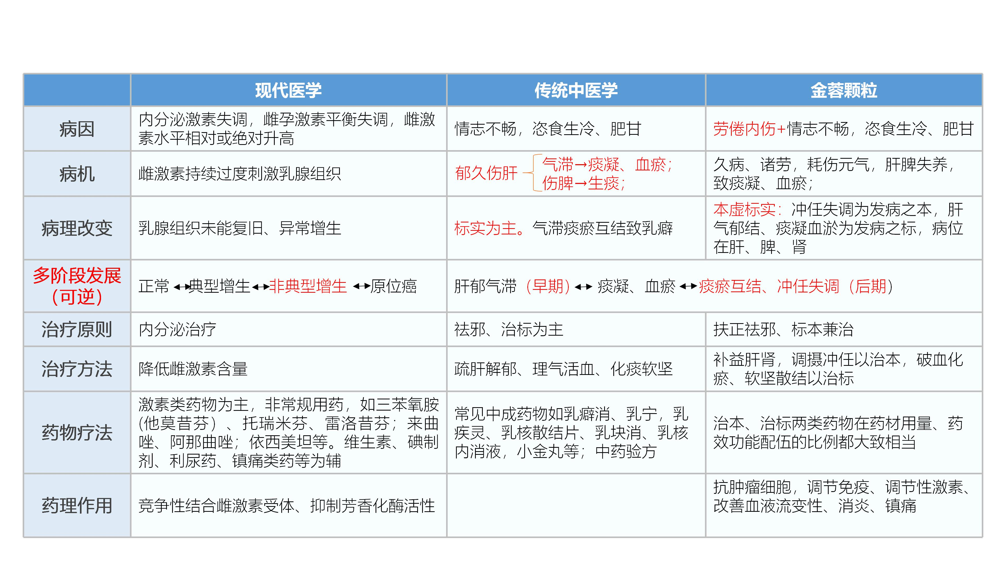
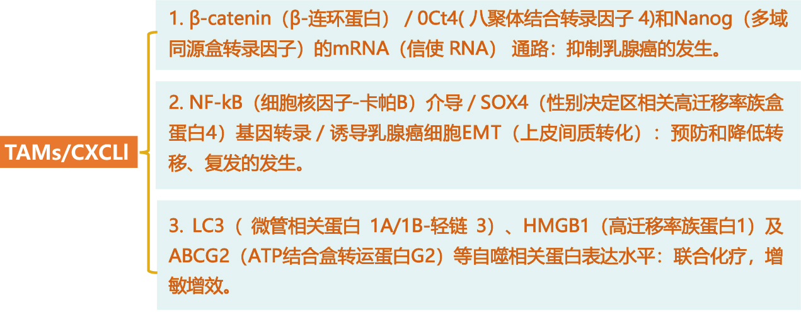
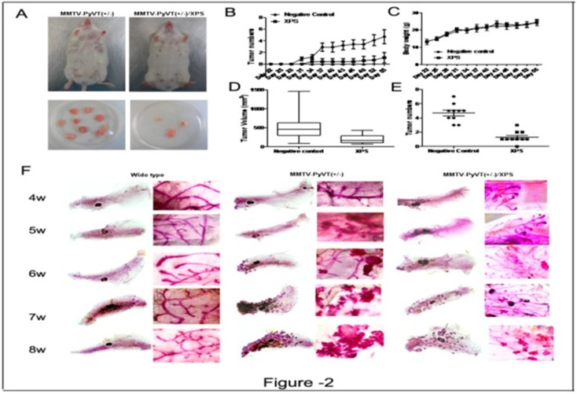
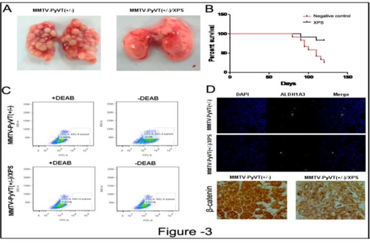
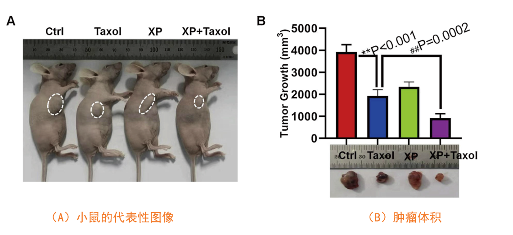
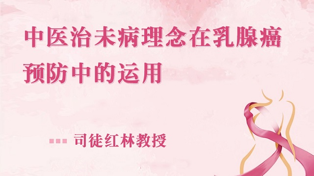

【功能主治】
补肾活血，化痰散结，调摄冲任。用于乳腺增生症痰瘀互结、冲任失调证，症见乳房疼痛 、触痛，胸闷胁胀，善郁易怒，失眠多梦，神疲乏力，腰膝痠软，舌淡红或青紫或舌边尖有瘀斑，苔白，脉弦细或滑。
 国家一类创新中药
国家一类创新中药
一、独特的治疗优势 单用，起效快，症状消失率高
二、创新性-物质基础优势
金蓉颗粒成品每袋8.5g（相当于饮片42.5g），成品中干膏占比高达约96%，这种比例目前在国内中药复方颗粒剂型中有效成份含量非常高。其含药量，大致相当于其它同专科领域一般中成药颗粒剂的21-37袋。
三、理、法、方、药 全方位创新

四、开创性的探索（六个第一个）
1、实行MAH以来，第一个成为持有人的中药创新药研发机构。
2、按照新药证书、药品注册批件、上市许可持有人三证合一实行联合审评的中药创新药。
3、参照美国FDA标准，严格按照中医学、现代医学新标准要求通过审评的中药创新药。
4、每袋有效成份约96%，在国内中药复方颗粒剂中有效成份含量非常高，1袋相当于其它中成药普药大约21-37袋。
5、采用区间范围的制订方法来制订成品质量标准：每袋含淫羊藿以淫羊藿苷（C33H40O15）计，应为25.5±7.5mg。
6、有效性评价、安全性评价、说明书格式的制定都广泛参考采用了现代医学的标准和方法。
五、国家药品审评中心的评价：
“为患者提供了一种新的中医证型的安全有效治疗手段，对于满足患者需求和解决临床可及性具有积极意义”。
——数据来源：2018年国家药品监督管理局药品审评中心.《2018年度药品审评报告》
2018年12月28日国家药品监督管理局官网评价“金蓉颗粒”：“在乳腺外科领域，…对这样一个易诊、难治、易复发的疾病，有较为独特的治疗优势，可以更好地满足临床治疗需求。”
——数据来源：https://www.nmpa.gov.cn/yaowen/ypjgyw/20181228170001791.html
一、临床研究:
(1)消癖1~6号口服液(金蓉颗粒前身)干预治疗乳腺癌癌前病变的研究
临床研究结果显示:
金蓉颗粒可干预治疗乳腺不典型增生、阻断和逆转乳腺癌前病变，在短期内使患者的乳腺高 频X线危险程度下降或得到控制。
(2)金蓉颗粒联合新辅助化疗治疗三阴性乳腺癌
①CR(即完全病灶消失)+PR(病灶肿块缩小≧½)提高了 34.48%
②临床总有效率 91.49% 高于化疗组 76.60%，提高了将近 15%
临床研究结果显示:
肿瘤标志物水平、生活质量、氧化应激指标水平、血管生成相关因子水平、T淋巴细胞亚群水平等方面对比化疗组具有显著改善，各方面差异均具有统计学意义(P ＜0.05)。
参照《实体瘤治疗疗效评价标准-RECIST》判定疗效。
(3)改善三阴性乳腺癌巩固期患者生存质量的探索性研究:
1、入组条件:选取2019年1月-2020年6月广东省中医院乳腺癌收治的三阴性乳腺癌 60例，治疗组/对照组各30例分别服用金蓉颗粒或安慰剂，疗程3个月。
2、观察指标:观察治疗前后生存质量、焦虑、抑郁、睡眠的变化情况及CXCL1血清浓度的变化情况;
生存质量-FACT-B 中文版调查表
焦虑一焦虑自评量表(SAS)
抑郁--抑郁自评量表(SDS)
睡眠--匹兹堡睡眠量表(PSQI)
CXCL1血清浓度在治疗前后采用血清标本采集后送检。治疗前后进行三大常规、肝肾功能、心电图的检查。
1、SAS 量表、SDS 量表:金蓉颗粒可以显著改善治疗组患者的抑郁情绪，且对抑郁改善幅度明显高于对照组
2、生存质量:金蓉颗粒可以总体上提升治疗组患者的生存质量。
3、睡眠障碍:改善乳腺癌术后患者睡眠质量。
缩短患者入睡时间，延长深度睡眠持续时间-增强日间活动精力,减轻疲乏症状
4、微观免疫指标:血清中 CXCL1水平较前下降，进一步验证了金蓉颗粒在 CXCL1 介导的乳腺癌复发转移及重塑免疫微环境中的作用--(分子作用机制研究证实)
(4)提高三阴性乳腺癌患者五年生存率
①提高乳腺癌患者 DFS(无病生存率至 100%)，在试验进行 5 年后，试验组无全医死亡，安慰剂组2例死亡
②显著降低了患者趋化因子(CXCL1)的血清水平、抑郁(SDS)、焦虑(SAS)和睡眠质量(PSQI)评分;提高了生活质量(FACT-B)评分
临床研究结果显示:
金蓉颗粒对三阴性乳腺癌,①
二、基础研究
预防乳腺癌发生发展、抑制乳腺癌转移、协同乳腺癌化疗增敏的系列基础研究
金蓉颗粒主要作用机制之一为影响肿瘤微环境，结合细胞因子芯片和生物学功能实验发现 TAMS/CXCL1 通路在介导金蓉颗粒抑制乳腺癌发生、发展过程中发挥主要作用，金蓉颗粒可通过 TAMS/CXCL1 通路增强乳腺癌化疗敏感性，抑制乳腺癌干细胞活性，同时阻断转移微环境形成。

（1）阻断乳腺癌前病变作用研究

结果显示:
A：消癖颗粒组能明显抑制乳腺肿瘤的数目和体积；
B：消癖颗粒组肿瘤发生时间显著延迟一周龄；
C&D：消癖颗粒组肿瘤数目和大小均少于对照组；
E：消癖颗粒对小鼠体重仅有轻微的影响作用；
F：乳腺组织胭脂红染色提示消癖颗粒可显著延迟乳腺癌发生时间及病灶数目。
（2）预防乳腺癌转移复发作用研究

结果显示：
A:与对照组转移灶数目和大小相比，消癖颗粒组未出现明显转移灶；
B：生存期显著优于对照组，后者于12周后出现严重的死亡事件；
C：消癖颗粒组乳腺癌干细胞含量显著低于对照组；
D：免疫荧光及组化实验结果表明：消癖颗粒组肿瘤组织中干细胞含量和β-catenin 表达水平显著低于对照组。
（3）乳腺癌术前增效增敏的研究

金蓉颗粒通过抑制CXCL1/HMGB1介导的自噬促进乳腺癌的化学敏感性的研究。
结果表明:单独使用紫杉醇或消癖颗粒均可减少肿瘤体积并抑制肿瘤生长，而联合用药组的抑制作用最强。此外，与紫杉醇治疗的肿瘤相比，联合治疗组的乳腺肿瘤坏死和出血的现象更少。
三、药理学研究
金蓉颗粒有效成份相关的药理作用显示：金蓉颗粒具有抗肿瘤细胞，调节免疫和性激素，改善血液流变性、消炎镇痛等作用，摘要如下：
1、抗肿瘤细胞
（1）淫羊藿苷具有与雌二醇（E2）相似的结构，可与E2竞争雌激素受体，减少雌激素对乳腺组织进行不良刺激所导致的乳腺组织增生性变化，抑制乳腺癌细胞的增殖；
（2）姜黄素能促进生长抑素（SS）的分泌，诱导乳腺癌细胞凋亡；
（3）莪术挥发油能抑制肿瘤细胞DNA和RNA的合成，诱导肿瘤细胞凋亡或分化；
（4）丹参酮IIa可抑制乳腺癌癌细胞的增殖和DNA合成，并诱导其凋亡；
（5）齐墩果酸能通过诱导肿瘤细胞凋亡、诱导肿瘤细胞分化、抑制肿瘤细胞增殖周期、抑制肿瘤血管新生等，抑制乳腺癌MCF-7细胞株等多种实体肿瘤细胞生长；
（6）二苯乙烯苷抑制肿瘤细胞DNA的合成、抑制肿瘤新生毛细血管网的生产而抑制肿瘤生长；
（7）益母草醇浸膏可抑制由增生性泡状瘤(HAN)引起的乳腺癌，使HAN数目减少，体积缩小；
（8）鳖甲多糖能明显抑制S180荷瘤小鼠肿瘤的生长，其机理可能是通过增强荷瘤小鼠的特异性免疫功能和非特异性免疫功能从而抑制肿瘤的生长；
（9）牡蛎有抗肿瘤、增强免疫力作用。
2、调节免疫
（1）淫羊藿苷能够激活巨噬细胞，增强巨噬细胞的吞噬功能；
（2）肉苁蓉能兴奋垂体，有类似肾上腺皮质激素样的作用，调节机体免疫功能；
（3）郁金挥发油具有调节免疫功能作用，其主要有效成份之一郁金二酮，还具有明显的中枢神经抑制作用；
（4）莪术挥发油可通过多种途径改善和提高免疫功能，对免疫系统具有保护和促进作用。
（5）女贞子能增单核细胞的吞噬功能，提高淋巴细胞转化率，升高血清IgG含量。其醇提液对Ⅰ、Ⅲ、Ⅳ型变态反应具有明显抑制作用；女贞子多糖具有显著的免疫增强作用，能升高外周白细胞数，抑制网状内皮系统的吞噬功能，增强细胞及体液免疫功能；
（6）何首乌浸膏能显著增强T细胞功能，进而间接增强B细胞对T依赖抗原的抗体应答，从而提高免疫水平；延缓胸腺退化和萎缩或增加其重量；
（7）益母草具有活跃淋巴系统的功能，从而提高免疫力。
3、调节性激素
（1）淫羊藿苷能促进性激素分泌，调节内分泌；
（2）毛蕊花糖苷通过增强下丘脑一垂体一肾上腺功能，促进体内相关递质和激素的释放；还能够抗疲劳、提高身体机能作用，可显著改善性器官脏器系数；
（3）女贞子有机提取物中含睾丸酮及雌二醇激素物质，能调节内分泌。
4、改善血液流变性
（1）淫羊藿苷可降低红细胞聚集性及降低全血粘度抑制血栓形成，具有直接扩张脑血管，增加脑血流量，降低脑血管阻力的功能；
（2）郁金挥发油具有改善血液流变性作用；
（3）莪术挥发油能改善血液流变性，促进自体血块的吸收；
（4）丹参酮IIA具有抗凝、抗血栓、改善血流动力学、抗动脉粥样硬化、降低心肌耗氧量、扩张脑血管、增加脑血流量等作用治疗心脑血管疾病；
（5）益母草对血液流变性学有显著的改善，可预防和抑制微小血管血栓形成，具有促进纤溶作用。其中益母草碱具有显著的直接扩张外周血管、增加血流量、抗血小板聚集活性和降低血液黏稠度等作用；
5、消炎
（1）毛蕊花糖苷具有抗炎、清除自由基的作用；
（2）松果菊苷不仅有抗氧化和清除自由基作用，而且具有一定的抗凋亡的作用；
（3）郁金挥发油具有抗自由基损伤、保肝作用。
（4）莪术挥发油能抗炎、抗溃疡，且有芳香健胃兴奋胃肠道；能抑菌；
（5）丹酚酸B具有抗炎、保护心脏、抗纤维化、抗肿瘤等多种药理活性；
（6）水苏碱在一定剂量内具有较强抗炎作用；
（7）蒽醌类大黄素具有抗炎、抗微生物及对肝、肾、胃肠道等有明显作用。
（8）女贞子水煎剂抑制炎症所引起的毛细血管通透性增高、炎症渗出增加和组织水肿以及慢性炎症损伤等，亦明显抑制炎症后期肉芽组织的增生；女贞子能激活垂体－肾上腺皮质系统，促进皮质激素的释放和抑制PGE的合成和释放，具有抗炎作用；
6、镇痛
（1）郁金醇提物、水提物均具有抗炎镇痛的作用；
（2）益母草总生物碱具有明显的抗炎镇痛作用；与抑制末梢神经对疼痛刺激的敏感性及抗炎作用有关；
7、其他作用
（1）女贞子有明显的降血糖作用，具有保肝功能；
（2）甜菜碱能促进平滑肌的收缩，达到润肠作用，对促进脂肪代谢、抗脂肪肝、保护肾脏、降压、缓和应激、增进食欲、稳定维生素等有多种药理作用；
（3）鳖甲具有抗肿瘤、抗突变、免疫调节、预防辐射损伤、抗疲劳作用，抑制结缔组织增生、抗肝纤维化，起到软化肝脾的作用，并能提升血浆蛋白、补血、增加骨密度等作用；
（4）牡蛎有保肝、延缓衰老、降血糖等作用，此外在中药药理上经常用于宁神安眠；
（5）丹参能扩张冠状动脉和周围血管，改善心肌收缩力、血液流变学和微循环，降低血压，能作用于多种血液凝固因子，提高细胞中CAMP，促进纤维蛋白原溶解且有抗凝作用，并能抑菌、抗感染、抗炎、解热、镇静、降血糖、降胆固醇、护肝、调整体液免疫和细胞免疫；影响过敏介质的释放，促进组织修复及再生。
四、药效学研究
1、药效学研究结果显示，金蓉颗粒（原名消癖颗粒）对乳腺增生病动物模型具有调节血液雌孕激素平衡、改善血液流变性和改善乳腺增生的病理结构、镇痛、抗炎的综合作用，如下表1、2、3所示:
| 试验目的 | 检测指标 | 检测方法 | 主要试验结果 |
|---|---|---|---|
| 对体重的影响 | 体重 | 电子天平称重 | 各剂量组体重有不同程度的增加，中、高剂组与模型组比较，差异有统计学意义。 |
| 对性激素水平的影响 | E2、P、FSH、LH | 放射免疫分析法 | 各剂量组的E2和LH含量降低，高剂量组较模型组的P含量明显升高。 |
| 对血液流变性的影响 | 全血比粘度、血浆比粘度、红细胞压积 | 粘度计法、红细胞压积管法 | 各项指标有不同程度的降低。 |
| 对乳腺组织病理组织学的影响 | 乳腺小叶数、腺泡数；乳腺胞浆面积、腺泡腔平均直径 | 光镜下观察乳腺组织病理形态学变化、第三代彩色图像分析测定仪测量 | 小叶数、腺泡数减少，腺泡腔直径降低，对胞浆面积无明显影响。 |
| 对乳腺组织电镜结果的影响 | 乳腺组织结构 | 电镜观察 | 随剂量的增加，显示腺腔、内分泌颗粒和细胞之间增生的胶原纤维减少 |
注：以上模型方法均为SD雌性大鼠肌肉注射苯甲酸雌二醇和黄体酮，造模完成后灌胃给药。
消癖颗粒组分为低、中、高三个剂量组，剂量分别为5.76、11.52、23.04g/kg，每天1次，连续30天灌胃相应浓度药液，10ml/kg。
| 试验目的 | 检测指标 | 检测方法 | 主要试验结果 |
|---|---|---|---|
| 对乳头高度的影响 | 乳头高度 | 精密游标卡尺深度尺测量 | 各剂量组乳头高度减小 |
| 对性激素水平的影响 | E2、P、FSH、LH | 放射免疫分析法 | 各剂量组E2含量降低，FSH含量升高 |
| 对乳腺组织病理组织学的影响 | 乳腺小叶数、腺泡数；腺泡腔平均直径 | 光镜下观察乳腺组织病理形态学变化、第三代彩色图像分析测定仪测量 | 乳腺小叶数减少，腺泡腔直径降低，对胞浆面积无明显影响。 |
| 对乳腺组织电镜结果的影响 | 乳腺组织结构 | 电镜观察 | 随剂量增加，显示腺细胞、腺导管增生程度逐渐减轻，甚至恢复正常，腺腔扩大均不明显，成纤维细胞逐渐明显减少。 |
注：以上模型方法均为白色雌性家兔肌肉注射苯甲酸雌二醇，造模完成后灌胃给药。
金蓉颗粒组分为低、中、高三个剂量组，剂量分别为2.99、5.97、11.94g/kg，每天1次，连续30天灌胃相应浓度药液，5ml/kg。
| 试验项目 | 检测方法 | 检测指标 | 主要试验结果 |
|---|---|---|---|
| 镇痛作用观察 | 热板法 | 舔后足所需时间 | 痛阈值增加 |
| 抗炎作用观察 | 二甲苯致炎法 | 左右二耳片重量差值 | 肿胀度明显小于空白对照组 |
注：以上动物均为昆明种清洁级小鼠，灌胃给药。镇痛作用观察雌性，不造模型；抗炎作用观察雌雄各半，右耳涂以二甲苯。
消癖颗粒组分为低、中、高三个剂量组，剂量分别为8.32、16.64、33.28g/kg，每天1次，连续7天灌胃相应浓度药液。
实验证明，消癖颗粒能使乳腺增生病的SD大鼠、家兔血清雌二醇（E2）含量均明显降低，SD大鼠黄体生成素（LH）含量降低，家兔促卵泡激素（FSH）含量升高；能使病理性SD大鼠各项血液流变学指标有不同程度的降低；病理组织观察，能使SD大鼠因病理性增多的乳腺小叶数、腺泡数减少，减低泡腔的直径。
昆明种小鼠的实验结果显示：消癖颗粒能升高小鼠痛阈值，具有镇痛作用；能抑制二甲苯所致小鼠耳肿胀，具有抗炎作用。
五、安全性研究
1、处方设计：在处方配伍上，金蓉颗粒由淫羊藿、肉苁蓉、郁金、丹参、莪术、益母草、女贞子、制何首乌、鳖甲和牡蛎共10味常用中药材组成，不含有毒性药材，其中牡蛎属于卫生部门规定的既是食品又是药品的物品，女贞子、丹参、制何首乌、益母草、淫羊藿、鳖甲属于卫生部门规定的可用于保健食品的物品（《卫生部关于进一步规范保健食品原料管理的通知》卫法监发）【2002】第51号）。处方组成安全系数高。
2、急性毒性试验：以最大浓度、最大体积的金蓉颗粒给小鼠灌胃，未能求出LD50，其最大耐受量可达233.6g／kg（指生药量，下同），按公斤体重折算相当于70kg成人临床用量的128倍，表明金蓉颗粒在推荐人用剂量范围内用药是安全的。
3、长期毒性试验：金蓉颗粒按低、中、高剂量12.5、33.1、87.6g/kg给大鼠连续灌胃给药26周，并停药观察4周，与对照组比较，对大鼠的一般状况、行为活动、进食量、体重増长、外周血象、性激素、脏器系数以及病理组织学等均无明显影响，金蓉颗粒低剂量12.5g/kg对大鼠血液生化指标均无明显影响。金蓉颗粒推荐成人每日用量为128g，按体重折算，金蓉颗粒低、中、高剂量组大鼠的用药量分别相当70 kg成人用量的6.8、18.1、47.9倍，在大鼠长期给药中未出现明显的毒副反应，表明金蓉颗粒的成人推荐临床用药剂量在临床应用是比较安全的。
4、III期临床试验期间仅有个别受试者用药后出现一过性肝功能、尿红细胞轻度异常，停药后恢复正常。
5、在生产工艺上，本品建立了覆盖原药材筛选控制、中间体控制，生产工艺关键参数控制、成品质量控制、内包材质量控制等全方位的质量控制体系，能够有效防止引入新的有害物质，保证成品的质量安全，确保药物在临床上的有效性。
6、在处方来源及人体应用历史方面，本品前身是国家级名老中医林毅教授发明的消癖口服液，该药作为院内制剂已在广州中医药大学第二附属医院等医院应用三十余年，治疗效果确切稳定，未发现有不良反应，得到良好的社会效益。本品除保持原口服液的优点外，在处方上或制剂工艺上与原消癖口服液基本相当，并未增加任何对人体有害或存在争议性的辅料，在安全性上沿袭了原剂型的优点。
从处方设计、毒理学研究、临床研究、生产工艺、全流程质量控制体系和人体应用史上都保证了本品具有良好的安全性和疗效性，适合乳腺增生病痰瘀互结、冲任失调症病人需要长期服药治疗的特点。
[1]全国名中医林毅五十年乳腺癌临证精要 .
[2]陈前军,徐飚,司徒红林,林毅,等.“消癖颗粒”阻断SD大鼠乳腺癌癌变及其对EGFR-STAT3通路影响研究[J]辽宁中医药大学学报,2012,14(8):19-20.
[3]司徒红林,陈前军.消癖1~6号口服液干预治疗乳腺癌癌前病变的研究[J]肿瘤防治杂志,2002,9(2):176-178.
[4]基于网络药理学的TAMs/CXCL-1验证是消癖颗粒预防乳腺癌发生和转移的关键介质 2017.
译文
原文
[5]消癖颗粒通过抑制肿瘤TAMs/CXCL1通路抑制乳腺癌干细胞 2019.
译文
原文
[6]消癖颗粒通过抑制TAMs/CXCL1信号通路抑制乳腺癌转移前微环境的形成 2020.
译文
原文
[7]消癖颗粒通过抑制CXCL1/HMGB1介导的自噬提高乳腺癌化疗敏感性 2019 .
译文
原文
[8]司徒红林,周劬志,卓睿等.消癖口服液治疗乳腺良性病变不典型增生的临床研究[J]甘肃中医,2001,2:53-55.
[9]林毅,司徒红林,陈前军.乳腺增生病与中医药周期疗法[J]中医药信息,2003,20(1):7-8.
[10]洪宋贞,蔡芳英,朱华宇.消癖口服液系列治疗乳腺增生病的疗效[J]实用医学杂志,2007,23(20):3276-3277.
11]刘晓燕,林毅,司徒红林等.中药周期疗法治疗乳腺增生症的临床研究[J]广东药学 ,2002,23(9):995-996.
[12]田莹,林毅.乳癖从经论治[J]现代中西医结合杂志,2005,14(11):1417-1418.
[13]邹建东,卞卫和,任小梅,等.消癖颗粒治疗乳腺增生病痰瘀互结冲任失调证的临床研究[J]世界中医药,2013,8(12):1439-1442.
[14]孟宪波,首弟武,陈立峰.消癖颗粒对大鼠乳腺增生模型的影响[J]中药药理与临床,2005:21(1):34-35.
[15]陈静,李渤文,孟宪波,首第武.消癖颗粒对家兔乳腺增生模型的影响[J]齐鲁药事·Qilu Pharmaceutical Af f airs 2007 Vol.26,No.7.427:427-428.
 安徽省乳腺癌防治高峰论坛
中医治未病理念在乳腺癌预防中的运用——司徒红林
[1]司徒红林.“消癖颗粒”林毅防治乳腺癌复发转移的策略与方法[C]China Academic Journal Electronic Publishing House,乳腺癌篇,1994-2019:30-32.
[2]周瑞芳,刘鹏熙,刘晓雁,林毅,司徒红林.林毅教授运用“治未病”理论防治乳腺癌经验介绍[J]新中医,2012,8(44):225-226.
[3]郭莉,刘鹏熙,林毅.中医药治疗乳腺癌的优势难点与对策若干思考[J]辽宁中医药大学学报,2010,11(12):124-125.
[4]中国早期乳腺癌中医辨证内治专家共识
金蓉颗粒严格质量控制管理体系
1、采用宗古依法严格药材炮制工艺，为了保证金蓉颗粒的高质量，所有原药材都是严格按照国家药品监督管理局核定的内控标准，采购高品质的道地药材，严格控制各个药材的道地原产地、采收季节、药用部位等，从药材的源头上控制好质量。
2、生产工艺的继承与创新：为了避免有效成分的损失，充分根据处方中各原药材和主要有效成分的理化性质，对各种药材分别采用不同的提取方法，以最大程度地提取其中有效成分。
如有效成分为挥发油的采用共水蒸馏法提取，这种提取方法迄今为止尚没有高效、简单的操作方法，在之前中药行业里是很大的难题，我们的科研团队历经10多年终于研制出具有自主知识产权的的专用提取和收集分离设备，有效地解决了这个难题。
有效成分为脂溶性的采用高浓度乙醇提取后再水提，有效成分为水溶性的采用水煎煮提取；药材之间可能影响有效成分溶出的则分开单独提取。因此生产工艺中既有水提又有醇提，既有混合提取又有单独提取，确保有效成分能充分提取出来，保证了本品具有充足的物质基础，保障临床疗效的正常发挥。
3、严格控制各工序的关键参数，避免有效成分的降解和破坏，比如浓缩和干燥工序，严格控制温度和真空度，控制最长受热时间，保护热敏成分不受破坏等，从而保证了本品最终的质量和治疗效果。
4、本品采用的是无蔗糖颗粒剂型，每袋8.5g相当于饮片42.5g，成品中干膏占比高达约90%，一袋金蓉颗粒相当于中成药普药颗粒剂18-31袋，这种比例目前在国内中药复方颗粒剂型中有效成份含量最高，有效保证疗效。
5、已经建立了从药材前处理、中间体到成品的覆盖整个生产过程的质量控制体系，从药材－中间体－成品，共有百来项质量检测项目控制有效成分的指标，严格控制各个生产工序的质量情况，保证本品的高质量。
【药品名称】
通用名称：金蓉颗粒
汉语拼音：JinrongKeli
【成 份】淫羊藿、肉苁蓉、郁金、丹参、莪术、益母草、女贞子、制何首乌、鳖甲、牡蛎。
【性 状】本品为棕黑色的颗粒；有特异的清香气，味微苦。
【功能主治】补肾活血，化痰散结，调摄冲任。用于乳腺增生症痰瘀互结、冲任失调证，症见乳房
疼痛、触痛，胸闷胁胀，善郁易怒，失眠多梦，神疲乏力，腰膝痠软，舌淡红或青紫
或舌边尖有瘀斑，苔白，脉弦细或滑。
【规 格】每袋装8.5g（相当于饮片42.5g），6袋/盒。
【用法用量】饭后开水冲温服。一次1袋，一日3次，经期停用，连续用药3个月经周期。
【不良反应】临床试验期间个别患者用药后出现肝功能轻度异常、尿红细胞轻度异常。
【禁 忌】
1．肝功能不全者禁用。
2．既往有何首乌或含何首乌制剂引起肝损伤病史者禁用。
3．孕妇和哺乳期妇女禁用。
【注意事项】
1.忌食生冷辛辣。
2.本品临床试验期间个别患者出现肝功能轻度异常，建议服药期间加强肝生化指标监测。
3.肝生化指标异常或有肝病史者慎用。
4.应避免与有肝毒性的药物联合使用。
5.既往有何首乌或含何首乌制剂引起肝损伤家族史者慎用。
6.过敏体质及对本品成分过敏者慎用。
7.有妊娠计划者慎用。
8.本品尚无连续用药3个月经周期以上的人用安全性研究数据
【临床试验】
本品于2005年4月由国家食品药品监督管理局批准，完成了Ⅱ、Ⅲ期临床试验。临床试验采用多中心、随机、双盲、平行对照的设计。纳入18～50岁，西医诊断为乳腺增生症，中医辨证为痰瘀互结、冲任失调者。排除了合并乳腺肿瘤、其它内分泌疾病者、月经淋漓不尽＞7天者，月经周期或经期过长或严重不规则者及妊娠期、哺乳期、绝经期妇女以及近三个月内有妊娠计划者。Ⅱ期临床试验共入组235例，其中Ⅱa期临床试验中试验组、对照组各60例，Ⅱb期临床试验中试验组57例，对照组58例；Ⅲ期临床试验共入组478例，其中试验组359例，对照组119例。
给药方法：试验组：金蓉颗粒，口服，每次1袋，一日3次，饭后温服。对照组：乳核散结片，口服，每次4片，一日3次，饭后温服。疗程：月经干净后第三天开始服药，经期停用，连续用药3个月经周期。
疗效性研究结果显示（见表1、表2）：
| 分组 | 试验组（n=359例） | 对照组（n=119例） | P值 | 备注 |
|---|---|---|---|---|
| 乳房疼痛 | 60.78% | 39.50% | （P＜0.05） | 备注 |
| 乳房触痛 | 66.48% | 47.86% | 备注 |
| 分组 | 试验组（n=359例） | 对照组（n=119例） | P值 |
|---|---|---|---|
| 胸闷胁胀 | 92.09% | 77.32% | （P＜0.05） |
| 善郁易怒 | 72.61% | 56.19% | |
| 失眠多梦 | 75.58% | 50.00% | |
| 神疲乏力 | 84.50% | 70.24% | |
| 腰膝痠软 | 80.25% | 50.70% |
安全性研究结果显示：试验组有3例受试者肝功能疗前正常，疗后轻度异常（见表3）； 有19例受试者尿红细胞疗前正常，疗后异常。
| 组别 | 项目 | 治疗前 | 治疗后 | 复查 | 正常值 |
|---|---|---|---|---|---|
| 试验组 | ALT | 27 | 84 | 9 | 0-42 |
| AST | 26 | 55 | 34 | 0-38 | |
| 试验组 | ALT | 47 | 47 | 11 | 0-42 |
| AST | 28 | 40 | 9 | 0-38 | |
| ALP | 92 | 127 | 69 | 35-104 | |
| 试验组 | ALT | 14 | 55 | 25 | 0-42 |
| AST | 17 | 42 | 20 | 0-38 |
【贮 藏】密封。
【包 装】聚酯/铝/聚乙烯药品包装用复合膜。
【有 效 期】36个月。
【执行标准】国家食品药品监督管理局标准YBZ00042018
【批准文号】国药准字Z20180002
【核准日期】2022年 12月 06日
【上市许可持有人】
企业名称：广州奇绩医药科技有限公司
注册地址：广州市黄埔区科学大道182号C2栋207房C2栋208房
邮政编码：510663
电话号码：020-32210390
传真号码：020-32210285
【受托生产企业】
企业名称：广州市康源药业有限公司
生产地址：广州市南沙区榄核镇民利工业区
邮政编码：511480
电话号码：020-84921810
传真号码：020-84927810
注册地址：广州市南沙区榄核镇民利工业区
一、中药注册分类
中药是指在我国中医药理论指导下使用的药用物质及其制剂。
1.中药创新药。指处方未在国家药品标准、药品注册标准及国家中医药主管部门发布的《古代经典名方目录》中收载，具有临床价值，且未在境外上市的中药新处方制剂。一般包含以下情形：
1.1中药复方制剂，系指由多味饮片、提取物等在中医药理论指导下组方而成的制剂。
1.2从单一植物、动物、矿物等物质中提取得到的提取物及其制剂。
1.3新药材及其制剂，即未被国家药品标准、药品注册标准以及省、自治区、直辖市药材标准收载的药材及其制剂，以及具有上述标准药材的原动、植物新的药用部位及其制剂。
2.中药改良型新药。指改变已上市中药的给药途径、剂型，且具有临床应用优势和特点，或增加功能主治等的制剂。一般包含以下情形：
2.1改变已上市中药给药途径的制剂，即不同给药途径或不同吸收部位之间相互改变的制剂。
2.2改变已上市中药剂型的制剂，即在给药途径不变的情况下改变剂型的制剂。
2.3中药增加功能主治。
2.4已上市中药生产工艺或辅料等改变引起药用物质基础或药物吸收、利用明显改变的。
3.古代经典名方中药复方制剂。古代经典名方是指符合《中华人民共和国中医药法》规定的，至今仍广泛应用、疗效确切、具有明显特色与优势的古代中医典籍所记载的方剂。古代经典名方中药复方制剂是指来源于古代经典名方的中药复方制剂。包含以下情形：
3.1按古代经典名方目录管理的中药复方制剂。
3.2其他来源于古代经典名方的中药复方制剂。包括未按古代经典名方目录管理的古代经典名方中药复方制剂和基于古代经典名方加减化裁的中药复方制剂。
4.同名同方药。指通用名称、处方、剂型、功能主治、用法及日用饮片量与已上市中药相同，且在安全性、有效性、质量可控性方面不低于该已上市中药的制剂。
天然药物是指在现代医药理论指导下使用的天然药用物质及其制剂。天然药物参照中药注册分类。
其他情形，主要指境外已上市境内未上市的中药、天然药物制剂。
二、中药注册申报资料要求
本申报资料项目及要求适用于中药创新药、改良型新药、古代经典名方中药复方制剂以及同名同方药。申请人需要基于不同注册分类、不同申报阶段以及中药注册受理审查指南的要求提供相应资料。申报资料应按照项目编号提供，对应项目无相关信息或研究资料，项目编号和名称也应保留，可在项下注明“无相关研究内容”或“不适用”。如果申请人要求减免资料，应当充分说明理由。申报资料的撰写还应参考相关法规、技术要求及技术指导原则的相关规定。境外生产药品提供的境外药品管理机构证明文件及全部技术资料应当是中文翻译文本并附原文。
天然药物制剂申报资料项目按照本文件要求，技术要求按照天然药物研究技术要求。天然药物的用途以适应症表述。
境外已上市境内未上市的中药、天然药物制剂参照中药创新药提供相关研究资料。
点击查看详情:中药注册分类及申报资料要求
历史沿革
金蓉颗粒（原名消癖颗粒，下同）源自广东省中医院院内制剂- -“消癖口服液”，由中医乳腺病名家、首届全国名中医林毅教授集长期临床经验研制发明。
该药从80年代末起应用于临床治疗乳腺增生病，临床应用及相关研究长达30多年，获得满意疗效。林毅教授在不断发掘中医学理论和方法的基础上，注重吸收和引进现代医学研究成果，制定了经前疏肝活血、消滞散结以治标，经后温肾助阳、调摄冲任以治本的治疗大法，并研制出纯中药制剂“消癖系列口服液”。为便于患者长期服用及临床推广，林毅教授在原消癖口服液系列制剂基础上进行组方优化，由广州奇绩医药科技有限公司牵头，联合广州中医药大学第二临床医学院、广州中医药大学第二附属医院、广东省中医院、广东省中医药科学院、湖南中医药大学、广东华南新药创制中心共同研发而成“消癖颗粒”（现更名为金蓉颗粒）。
该药除了保持原系列口服液“经前疏肝，经后补肾”的“周期疗法”的优点外，还具有：有效率高、疗效稳定、安全性高，临床可操作性、可重复性强等特点。